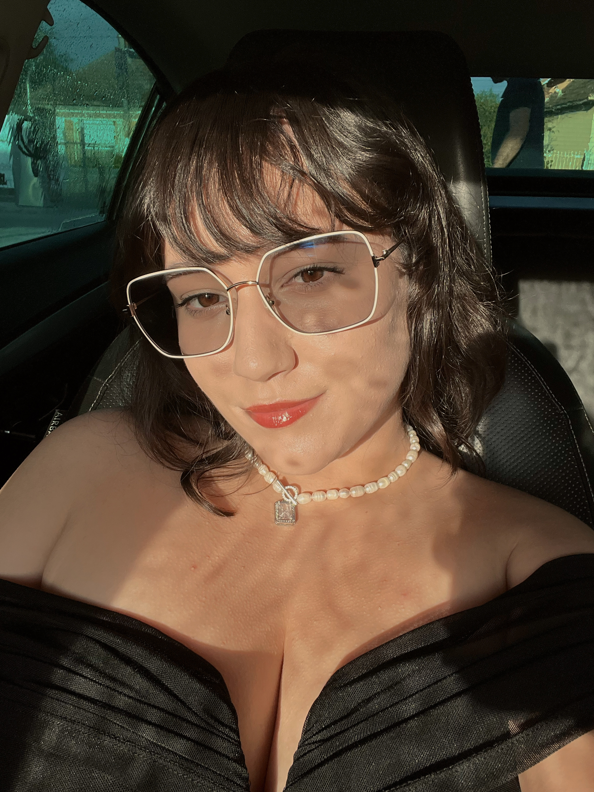

Summary:
I am a person that adapts and solves fast any occuring problem.
I am capable of working with a group of poeple to solve the received tasks.
Education:
Studied at Gheorghe Dragos Economy College
Studied at Cluj Napoca Technical University (Journalism degree)
Management diploma from a course I attended in college (on-site at the University)
Antrepreneur certificate from a licensed online course
Working Experience
Journalist at a local newspaper: ObiectivSM
Sales Analyst/Supplier consultant at ZES Zollner Electronic S.R.L.
Skills:
HTML web design
Communication skills
Analytic skills
Leadership skills
MS Office & Excel
SAP
Outlook
Notes
Hobbies:
Skydiving
Painting
Video Games playing/streaming
Drawing
Snowboarding
Contact information:
LinkedIn
Instagram